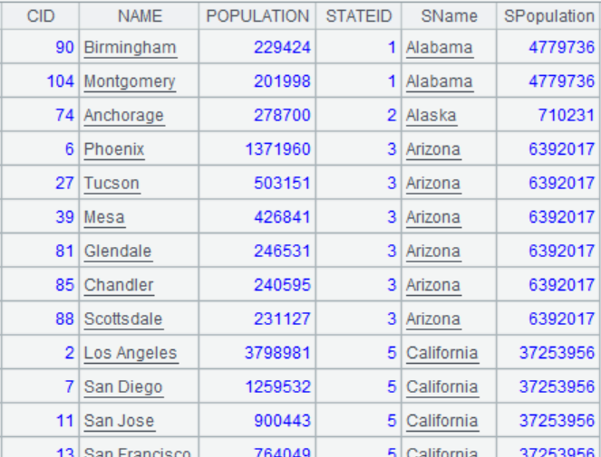

Description:
The external library function (See External Library Guide) normalizes a table sequence/record sequence numeric variable during modeling.
Sytnax:
|
P.numnorm(cn) |
During modeling, normalize numeric variable cn and return a binary sequence containing the normalization result and normalization process records Rec |
|
|
|
P.numnorm@r(cn, Rec) |
During scoring, normalize numeric variable cn according to normalization process records Rec |
|
|
Parameter:
|
P |
A table sequence/record sequence |
|
cn |
A string/number, which is the name of column (or the column number starting from 1) – the to-be-pre-processed variable – in a table sequence or record sequence |
|
Rec |
A sequence of normalization process records |
Option:
|
@c |
Modify the original data to the normalization result after execution |
Return value:
A sequence
Example:
|
|
A |
|
|
1 |
=T("D://house_prices_train.csv") |
Import modeling data |
|
2 |
=T("D://house_prices_test.csv") |
Import scoring data |
|
3 |
=A1.numnorm("LotArea") |
 Normalize variable ¡°LotArea¡±: A3(1) Normalization result A3(2) Normalization process records Rec |
|
4 |
=A2.numnorm@r("LotArea",A3(2)) |
Normalize variable ¡°LotArea¡± on scoring data in the same rule according to A3¡¯s normalization process records Rec |